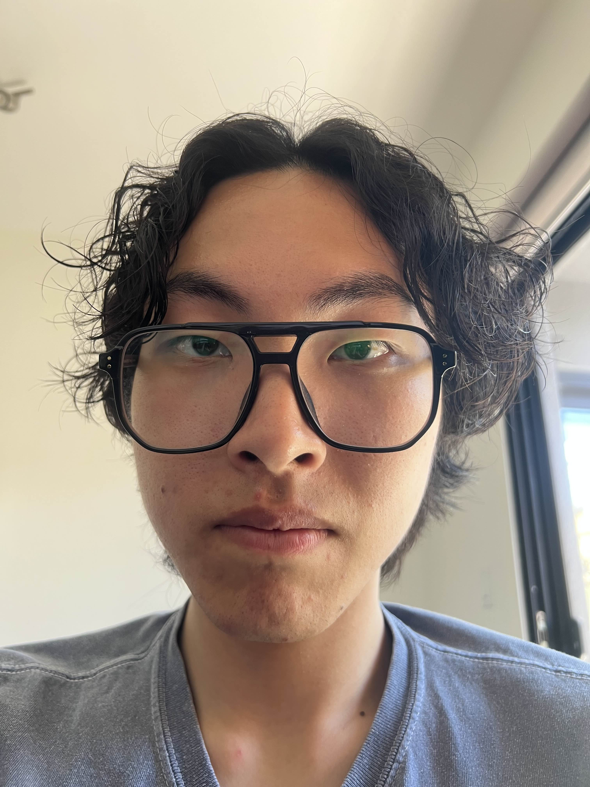
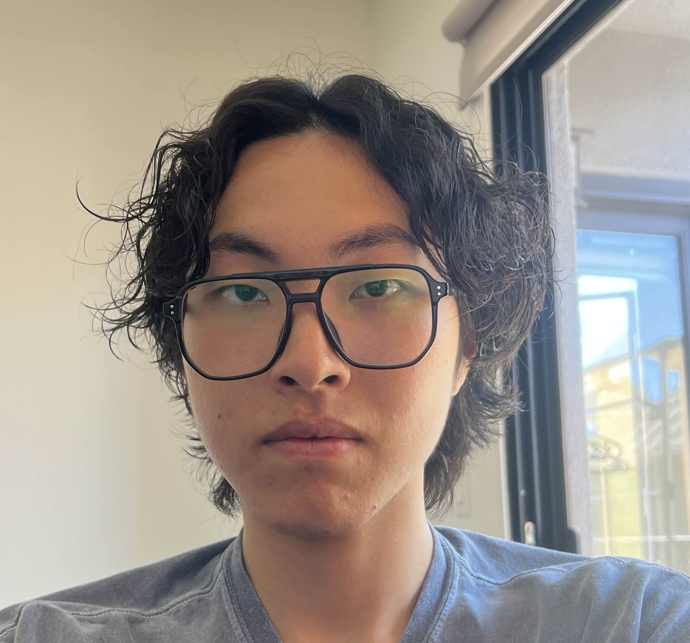

Project 0: Becoming Friends with Your Camera
Part 1: Selfie
 
Normal selfie looks much better than the zoomed-in one...
Part 2: Architecture
The zoomed-in Sather Gate looks more crowded than the close-up one.
Part 3: Dolly Zoom -- Pou
I love them :D